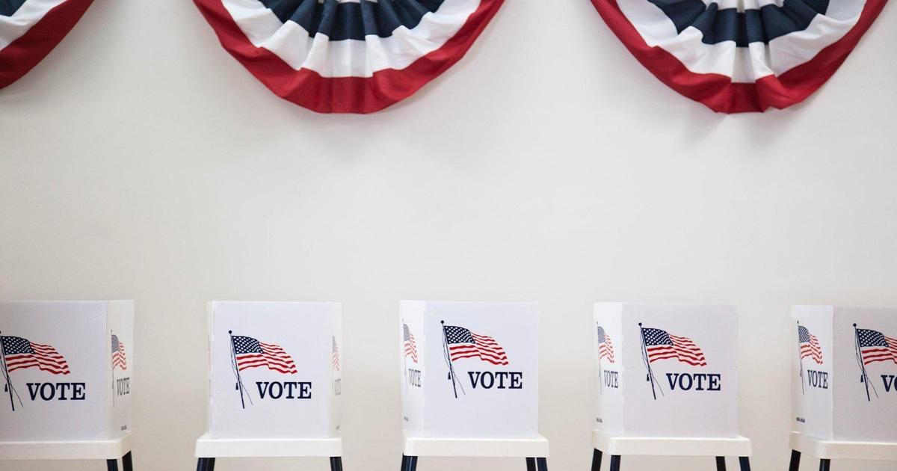

Pennsylvania GOP puts clout back on line in primary after losing '22 Senate, governor racesPennsylvania's Republican Party is trying to learn from internal strife over last year's failure to endorse in premier primary contests and, this year, it is putting its clout on the line by issuing endorsements ahead of Tuesday's primary election. Republicans are now putting up big bucks to try to ensure their endorsed candidate isn't beaten in this year's top-of-the-ticket race for an open seat on the state Supreme Court presidential battleground state. Leading figures in the GOP say there was an urgent and concerted effort to resume endorsing to help ensure the party's nominees are strong enough to compete against Democrats in a general election in politically moderate Pennsylvania. "We can't get into a train wreck like we had last year," said Doug McLinko, a state party committeeman who is vice chair of the Bradford County GOP. "We have to put up the best candidates." Last year, a stampede of candidates for the state's open U.S. Senate seat and open governor's office confronted the state Republican Party. Riven by loyalties to candidates, party committee members stepped aside without endorsing in a nine-person field for governor and seven-person field for U.S. Senate. That primary election produced two winners. Dr. Mehmet Oz, the heart surgeon-turned-TV celebrity from New Jersey, won the party's nomination for Senate while state Sen. Doug Mastriano won the nomination for governor. Both then lost convincingly in the fall general election amid a disappointing election nationally for Republicans. Finger-pointing ensued, with critics blaming a failure to endorse with helping produce nominees who were too weak to win a general election. The arguments gave new resolve for the party to get involved in primaries again, even from some whose candidates didn't win the endorsement. "'Lesson learned' pretty much sums it up," said Jackie Kulback, who chairs the Cambria County Republican Party. In February, GOP committee members overwhelmingly endorsedCarolyn Carluccio, a Montgomery County judge. Challenging her in the primary is Patricia McCullough, a judge on the lower statewide Commonwealth Court who is a second-time candidate for state Supreme Court. The Supreme Court race won't tilt the balance of power, but it could help Republicans narrow the gap on a panel that currently has four justices elected as Democrats and two as Republicans. Party officials acknowledge that their endorsement does not guarantee Carluccio victory. McCullough, 66, ran against the party endorsement for state Supreme Court in 2021 and lost, but ran against the party endorsement in 2009 for Commonwealth Court and won. And some party officials worry she could beat Carluccio, 62, in an off-year primary contest where turnout is light and voters know little, if anything, about the candidates. Asked what Carluccio needs to do to win, Rob Gleason — a former GOP state chair — said, "spend a lot of money." Party allies are lining up with cash. The Republican State Leadership Committee disclosed spending $600,000 on TV ads, including one attacking McCullough. A political action committee funded largely by suburban Philadelphia billionaire Jeffrey Yass kicked in $250,000 for fliers. All told, Carluccio's campaign and its allies have reported spending more than $1.1 million to help her. McCullough, who says she does not raise money from lawyers and lobbyists, has reported raising less than $20,000 total. McCullough has some backers. At least two county parties — Lycoming and Berks — have peeled off and endorsed McCullough, while other county parties have welcomed her into their events to speak. Also backing McCullough is Mastriano, who easily won last year's GOP primary for governor despite being heavily outspent. He went on to lose November's general election to Democrat Josh Shapiro by 15 percentage points. The durability of the GOP's renewed favor for endorsing is another question. To some extent, it was easier to endorse in this year's contests for statewide judicial seats. There were fewer candidates, for one, than last year's races for governor and U.S. Senate. A new test of unity will come early next year, when party members may have to confront contested primaries in 2024's election for president, U.S. Senate and an open state attorney general's office. "The rug-cutting time will be this January," Gleason said, "when we need to decide whether we're going to have endorsements for president and all the way down." __ Follow Marc Levy on Twitter: http://twitter.com/timelywriter for more features. |
 |